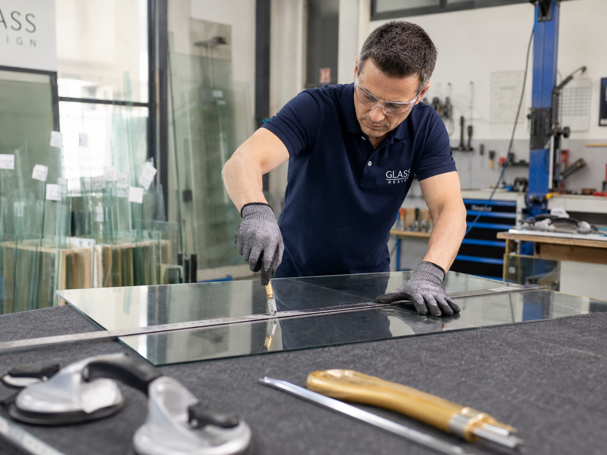

Diagnostic
Le type de vitrage, le support et le niveau de sécurité sont vérifiés avant proposition.
Petit carreau, fenêtre ancienne, mastic durci ou verre irrégulier : remplacement soigné avec devis gratuit.
Les carreaux anciens ont souvent des dimensions qui ne correspondent pas aux standards actuels. Ils peuvent être posés au mastic, maintenus par de petites pointes ou intégrés dans un cadre bois qui a travaillé avec le temps. À Évreux, ce type de réparation demande de la précision.
Le vitrier ne doit pas seulement mesurer le trou visible. Il doit tenir compte de la feuillure, du jeu de pose, de l’état du bois et de l’épaisseur compatible. Une découpe trop juste casse au moindre mouvement, une découpe trop petite tient mal.
Le devis gratuit précise la découpe, la reprise éventuelle du mastic et le délai. Pour un petit carreau standard ou une découpe simple, l’intervention peut se prévoir en 24/48H selon disponibilité.

Le type de vitrage, le support et le niveau de sécurité sont vérifiés avant proposition.
Dimensions, épaisseur, feuillure, parcloses et contraintes de pose sont contrôlées.
Le prix est expliqué avant commande, découpe, sécurisation ou remplacement.
Après intervention, maintien, étanchéité et usage quotidien sont contrôlés.
Sur une fenêtre ancienne, le but est souvent de réparer sans dénaturer. Il faut donc choisir un verre compatible avec l’ouverture, l’épaisseur et le maintien existant.
La réparation reste technique : le bois peut être sec, la peinture collée au verre et les anciennes pointes difficiles à retirer. Un geste trop brusque peut casser le cadre.
À Évreux 27000, l’intervention reste centrée sur le problème réel : vitrage cassé, verre inadapté, joint fatigué, support ancien, commerce à sécuriser ou confort à améliorer. Le quartier compte pour l’organisation, mais le choix technique vient toujours avant le mot-clé.
Chaque vitrage impose une méthode. Une page utile doit expliquer le métier, pas seulement répéter une ville.
La découpe sur mesure permet d’adapter le carreau à une ouverture irrégulière. Le mastic ou les parcloses assurent ensuite le maintien et l’étanchéité.
Cette étape permet d’éviter les mauvaises surprises : verre trop épais, cadre fatigué, joint non compatible, parclose cassante ou découpe impossible à poser proprement.
Après la pose, la fenêtre doit pouvoir fermer sans pression excessive sur le verre. Cette vérification évite les fissures quelques jours après l’intervention.
Le délai dépend du verre, des dimensions et de la fabrication. Quand la pose immédiate n’est pas sérieuse, une mise en sécurité ou une commande claire est préférable à un bricolage fragile.
Le devis gratuit sert à poser le cadre : nature du vitrage, urgence, délai, accès, protection nécessaire et limites éventuelles. Cette transparence évite les interventions commencées trop vite et les prix découverts au dernier moment.
DS Dépannage peut intervenir pour un particulier, un commerce, un bureau ou une copropriété selon disponibilité. L’objectif est de sécuriser, remplacer ou fabriquer le vitrage adapté sans confondre dépannage urgent et pose définitive.
Pour les vitrages sur mesure, la précision des informations accélère la réponse : photos, largeur, hauteur, épaisseur si connue, type de menuiserie et localisation dans le bâtiment.
Le prix dépend du vitrage, des dimensions, de la finition, du niveau de sécurité et de l’urgence. Le devis est gratuit avant intervention.
Identification du verre, du support et de la faisabilité.
Possible selon disponibilité du vitrage ou de la découpe.
Dimensions, chants, trempe, feuilletage ou composition isolante.
Protection provisoire si le remplacement immédiat n’est pas adapté.
La page concerne Évreux 27000 : centre-ville, Nétreville, Navarre, Saint-Michel, La Madeleine, Cambolle, Clos au Duc, secteur gare et zones d’activité selon disponibilité.
La localisation aide à organiser le déplacement, mais le contenu reste orienté vitrerie : diagnostic, choix du verre, remplacement, étanchéité, sécurisation et devis gratuit.
Oui, si le cadre est sain et si le vitrage peut être découpé aux bonnes dimensions.
Souvent oui, surtout s’il est sec, cassant ou absent. Il assure le maintien et l’étanchéité.
Oui, le devis gratuit détaille la découpe, la pose et le délai.
Oui selon le type de verre, les dimensions et l’état de la fenêtre.
Décrivez le vitrage, la dimension approximative, l’adresse à Évreux et le niveau d’urgence. Un devis gratuit est annoncé avant intervention ou commande.